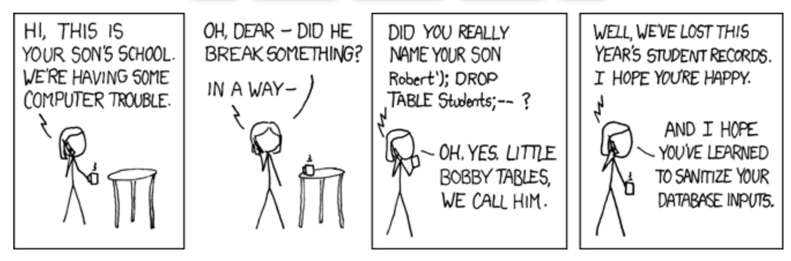

CS 2422: Software Debugging
Class 8
Course matters
DIDUCE review due tomorrow
How are the bug logs going?
Anyone tried the string processing programs (file extension, canonical names)?
String manipulation
Document example values at each step
Make best effort to illustrate tricky situations
// converts a file path like a/b/c.class or a\b\c.class into a.b.c
String manipulate (String path) {
// ex: path = a\b\c.class
path = path.replaceAll ("\\\\", "/"); // a/b/c.class
String dir = getDir(path); // a/b
String file = getFile(path); // c.class
String ext = getExt(file); // .class
String prefix = getPrefix(file); // c
String pkg = path.replaceAll ("/", "."); // a.b
return pkg + "." + prefix; // a.b.c
}
Research idea
It is painful and difficult to understand a large program
Run an instrumented program to generate concrete values per line (assume it runs correctly)
Insert an example value back into source code to help program understanding
Or even insert a synthesis of values
Focus on presence of interesting values (not absence)
Automatic code annotation
Synthesis of example values (multiple possible ways)
// comments below would be automatically generated from a successful run
// of the program and inserted into a special version of the source code
Object p = ...; // p may be null
String x = ...; // x's length is from 5 to 45 and always ends with /
int k = ...; // k ranges from 3 to 20
int m = ...; // m is not negative
Open question: how else can an IDE support program understanding?
String canonicalization
Say names of users are stored in a map as they are read
Both put and get on the map must use the exact same key
Can be done by canonicalizing string, e.g. always convert to first last
But must be done consistently along all code paths
Strings on a web page
Strings with HTML special chars must be HTML escaped
e.g. & → &, < → <, etc.
For every string being emit on a page, be aware of where it is coming from
Ok if within the program and can be reasoned about
Must escape if coming from unconstrained user input
Must avoid escaping multiple times (unlike canon.)
Real world example
Web app was printing name of a person
Along came input: Helen & Newton (a couple) for a "person" name
Result: broke the HTML page
Lesson: Always escape unknown strings (even if expected to be "ordinary")
Reflection of untrusted input into HTML is an important vector for cross-site scripting (XSS) attacks
Trust in strings
Where does a string get its value from?
- From within the program
- From outside the program, but from a trusted source
- From outside the program, but from a maybe untrusted source
Taint analysis
Any operation involving 2 strings results in a string with the lower trust level
A tainted string immediately taints everything that it feeds
Common technique for security analysis
Injection attacks
Injection attacks
Many types: SQL injection, Command injection, Code injection, CRLF injection, ...
General principle: an untrusted string makes its way into a place that is thought to be trusted
Conceptual flaw: treating data as a program
Shellshock (2014)
Serious vulnerability discovered in the bash shell (undetected since ~1989)
Attacker can execute arbitrary code on a server
Caused immediate patches and upgrades
Initial fix was not complete
Shellshock bug
p=FOO echo $p
# prints FOO in env. var p
x='() { :;}; do_bad_stuff' bash -c "do_good_stuff"
# Only intends to define x as a function
# but also executes do_bad_stuff
Shellshock exploit
Possible exploit: send HTTP header to /.../abc.cgi
Cookie: () { :;}; do_bad_stuff
Website may execute:
# header is set as an env var
Cookie='() { :;}; do_bad_stuff' bash /.../abc.cgi
Log4Shell exploit (2021)
Major vulnerability affecting a huge number of servers
Log4j while logging a string interprets it for directory server references
Attacker can format logged string to point to a malicious directory server
Directory sends malicious class that is executed on the server
Log4Shell exploit (2021)